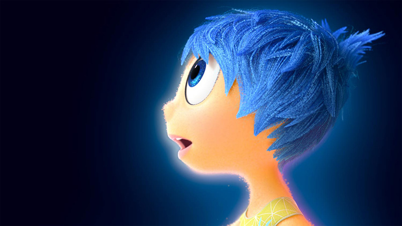
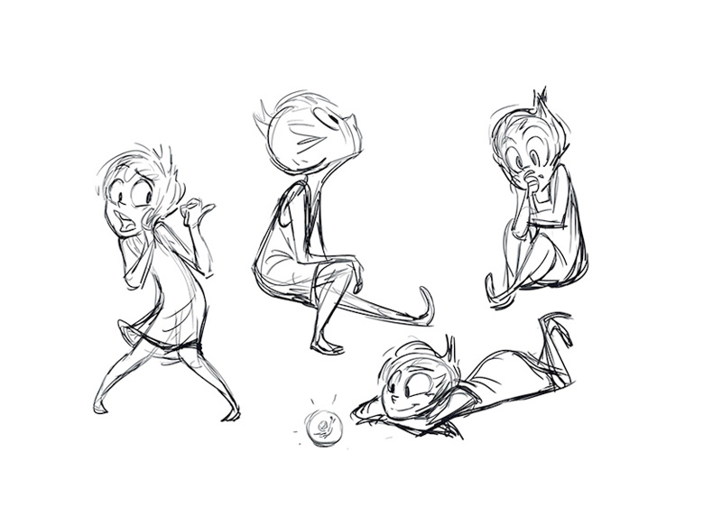
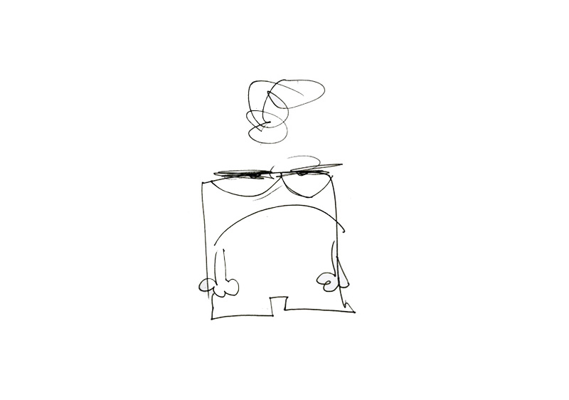
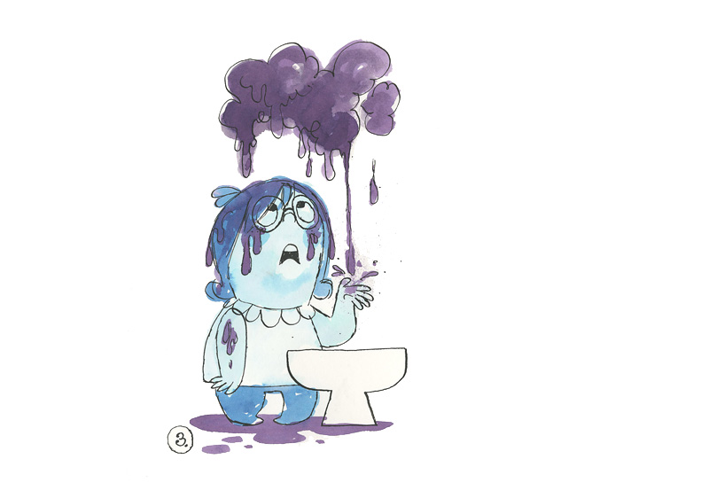
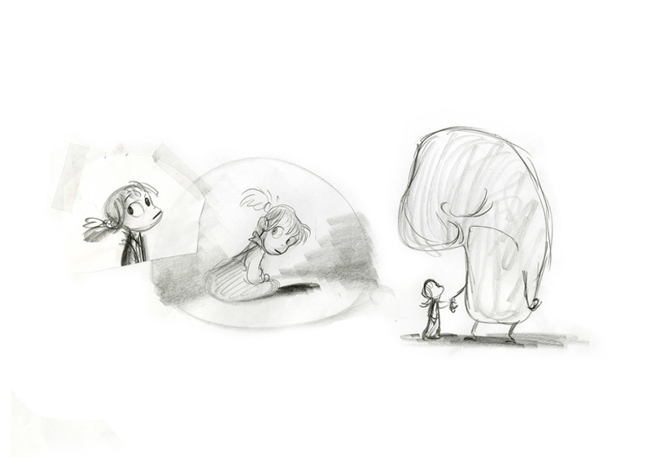
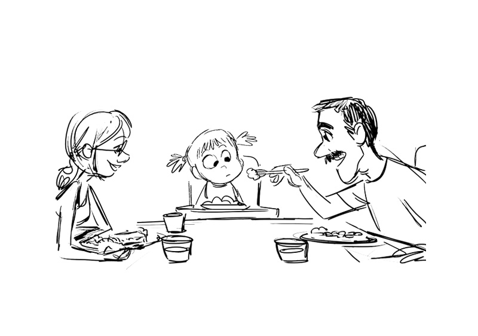
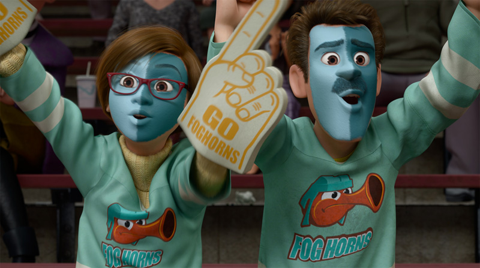

본문콘텐츠영역
Character
-
Joy
Joy’s goal has always been to make sure Riley stays happy. She is lighthearted, optimistic and determined to find the fun in every situation. Joy sees challenges in Riley’s life as opportunities, and the less happy moments as hiccups on the way back to something great. As long as Riley is happy, so is Joy.
 -
Anger
Anger feels very passionately about making sure things are fair for Riley. He has a fiery spirit and tends to explode (literally) when things don’t go as planned. He is quick to overreact and has little patience for life’s imperfections.

-
Fear
Fear’s main job is to protect Riley and keep her safe. He is constantly on the lookout for potential disasters, and spends time evaluating the possible dangers, pitfalls and risk involved in Riley’s everyday activities. There are very few activities and events that Fear does not find to be dangerous and possibly fatal.
-
Sadness
None of the other Emotions really understand what Sadness’s role is. Sadness would love to be more optimistic and helpful in keeping Riley happy, but she finds it so hard to be positive. Sometimes it seems like the best thing to do is just lie on the floor and have a good cry.
 -
Disgust
Disgust is highly opinionated, extremely honest and prevents Riley from getting poisoned – both physically and socially. She keeps a careful eye on the people, places and things that Riley comes into contact with – whether that’s broccoli or last year’s fashion trend. Disgust always has the best of intentions and refuses to lower her standards.
-
BingBong
With the trunk of an elephant, the tail of a cat, and body of cotton candy, Bing Bong is Riley’s imaginary friend. (You have to remember, when Riley was three animals were all the rage.) Unfortunately, he’s been out of work since Riley turned four, and he’s desperate to not be left behind as Riley grows up.
-
Riley
Riley Andersen is an eternally happy kid, at least until she turns eleven and her dad gets a job across the country, forcing the family to relocate to San Francisco. As she struggles to navigate a new home and school, Riley experiences an unfamiliar mix of emotions.
 -
Mom and Dad
With a new job and a brand new city, Riley’s Mom and Dad find themselves dealing with the ever-changing emotions of their once happy daughter.
